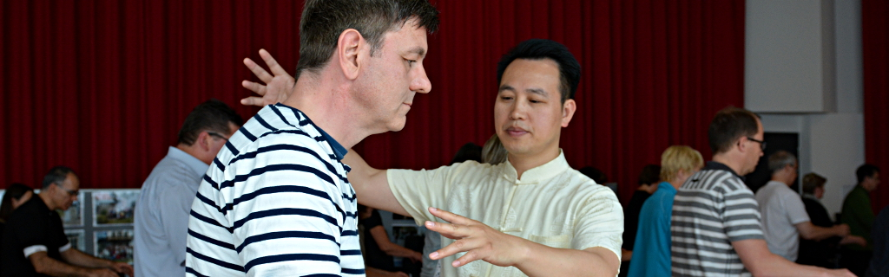
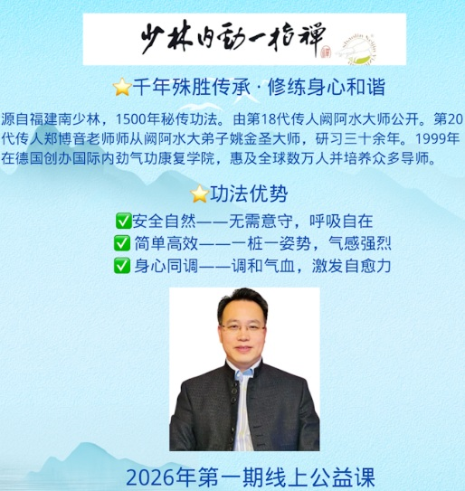
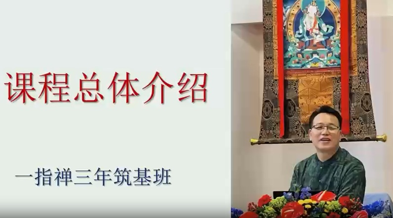
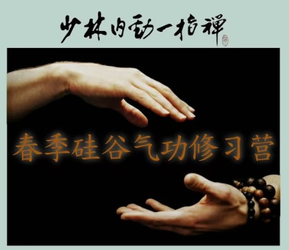
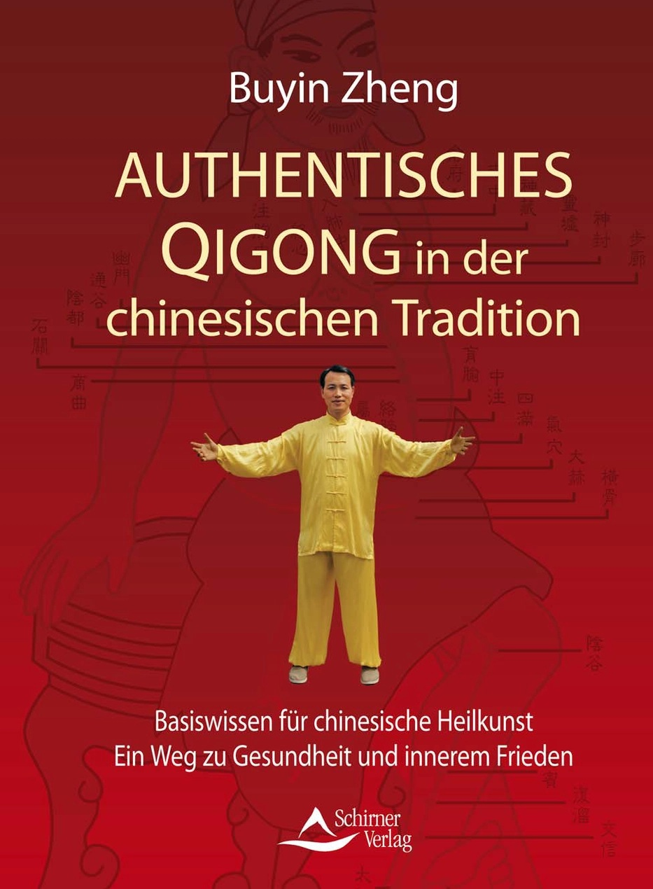
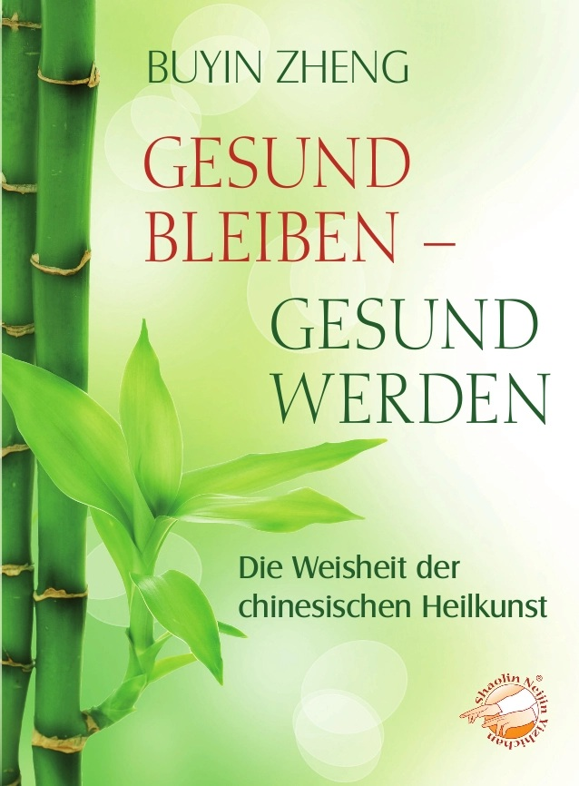

新闻 / 活动中心
欢迎来到新闻与活动中心。这里汇集了最新动态、课程信息、静修活动、 学习资源及多媒体内容，为您提供持续学习、交流与成长的平台。
灵感启迪
在本栏目中，您将发现关于少林内劲气功的最新见解、启发性文章与行业资讯。 通过阅读不同的思想、经历与故事，探索通往健康、宁静与充满活力生活的新方向， 为个人修行与成长不断注入新的灵感。

新闻与故事1...
新闻与故事2...
新闻与故事3,,,
新闻与故事4...
新闻与故事5...
如果您需要更多的故事信息，请点击链接：更多新闻与故事信息
研讨会与静修营
郑博音大师主持的研讨会与静修营，为初学者和长期习练者提供深入学习与实践的机会。 在宁静的环境中体验气功修炼，培养内在平和、更清晰的觉察力， 并建立与自己更深层次的连接。
线上公益课和研讨会
郑博音大师的少林内劲一指禅线上公益课主要通过合作的心灵成长与公益平台以及其官方自媒体渠道面向全球习练者开放。此类公益课程通常以“单堂体验课”或“主题讲座”的形式开展，旨在通过网络帮助大众缓解焦虑、调理身心。

📺 线上公益课的核心内容及参与方式，如下：
在线上公益课堂中，郑博音大师通常会结合现代人的亚健康状态，拆解少林内劲一指禅的核心精髓：
- 放松法：针对压力、焦虑人群的冥想和正念练习，引导意念收回体内。
- 动功示范：传授少林独特的脊柱复健养生功法，帮助久坐族疏通气血。
- 理论基础：讲解“姿势与心理状态”的联系，以及如何通过律动打通体内通道、重整心灵。
- 实时答疑：留出时间为线上学员解答练功过程中的气感、姿势等疑问。
⏱️ 公益课参与通道与注意事项：
- 上课形式：通过 ZOOM 软件进行全球多时区同步直播（通常涵盖美西、美东及亚洲时区）。
- 费用与回放：此类公益普及课通常为完全免费。但需注意，根据平台规定，免费课程一般不提供长期的影片回放和讲义，建议准时出席直播随堂习练。
查看最新的公益课信息。，请点击链接：线上公益课和研讨会
线上三年班
郑博音大师的少林内劲一指禅“三年班”，是面向希望深入系统修习、进行个人深度调理、或未来成为职业气功导师的学员所设立的长期正规课程。以下是关于该三年班的核心学制、线上线下结合形式及修习内容：

⏳ 学制与上课形式（混合制）
该培训不仅限于纯线上，而是采用线上直播（Hybrid/线上结合）与线下集训相结合的混合模式，任何时间皆可报名入学：
- 学制周期：总学制为 3 年。
- 线上修习（Hybrid）：为了方便全球各地的学员（如美国硅谷、纽约，中国内地及台湾的学友），研讨会均提供线上直播/网络同步参与的选项，学员可以在家通过网络同步跟随郑博音大师学习。
- 线下工作坊/夏令营（强烈推荐）：学院建议学员在 3 年期间，至少亲自前往参加 1 次国际夏令营（通常在德国线下封闭式集训）和美国硅谷或纽约的线下工作坊，以接受郑博音大师更直接的功力调理和姿势纠正。
📚 三年班的核心修习内容
与单堂的公益体验课不同，“三年班”旨在从零基础到专业导师的跨越，教学内容极为严谨：动功与静功的深度进阶：从基础的放松法、脊柱养生、马步站桩，逐步进阶到高阶内劲调动与罗汉神功等。
- 心性与正念训练：训练意识的收敛与专注，学习如何将气功用于身心压力的释放和慢性病的自我调理。
- 中医与气功理论：学习黄帝内经和道德经。系统学习气功经络学、气血运行规律以及功法医学原理。
- 静功与站桩：以马步桩、弓步桩等核心桩法为基础，快速打通气脉，蓄积体内“暗劲”与阳气。
- 动功与手导引：包含独特的“扳指法”和脊柱养生功，通过手指动作与身体律动调理内脏、疏通十二经络。
- 医学气功应用：传授外气外放、一指禅推拿、自愈潜能激发等用于自身康复或为他人导引疗疾的进阶技能。
- 无需意守与入静：该功法的一大优势是安全自然，不需要高难度的意守冥想，适合各个年龄段和不同基础的习练者（包括中老年及亚健康人群）安全入门。
📜 毕业与职业认证
- 考核与证书：成功修满 3 年学业并通过考核的学员，将获得由郑博音大师签发的气功导师毕业证书。
- 健康保险预防项目对接：由于该学院在欧洲（尤其是德国）具有极高声誉，毕业的导师若具备相应的医学或护理背景，其开设的课程未来有机会申请纳入当地预防性医疗/健康保险报销体系。
📧 如何咨询与报名？查看最新的线上三年班信息。，请点击链接：线上三年班
线下工作坊
郑博音大师的少林内劲一指禅线下工作坊（Seminars & Workshops），主要是其国际内劲气功康复养生学院在全球开展的密集型线下集训课程。这类工作坊与日常线上课相比，最大的核心优势在于郑老师能够亲自在场调理学员的气场，并进行面对面的“一对一”身形与站桩姿势纠正。

🌍 线下工作坊的常见形式如下：
郑博音大师的线下密集课程通常根据时间长短分为三类：
- 单日/周末工作坊（Day/Weekend Seminars）：通常为期 1-2 天，适合想要快速入门、纠正站桩动作，或针对脊柱健康等特定主题进行调理的学员。
- 多日封闭式研修营（Retreats）：一般为期 3-5 天，包含更深度的静功（站桩）突破、冥想以及心性重整训练。
- 年度国际夏令营（Summer Camp）：每年夏季在德国总部举办的多日大型线下闭关集训。
🧘♂️ 工作坊的核心习练内容
在线下工作坊中，由于有面对面教学的条件，课程内容会比线上课更加深化：
- 触点式姿势纠正（Form Correction）：少林内劲一指禅讲究“一桩一势，次第清晰”。郑博音大师会逐一调整学员的马步、脊柱、手指扳指角度，确保气血通道完全疏通，避免盲目苦练导致的“走火”或关节劳损。
- 气场共振与外气调理：在线下集体练功的环境下，导师会组建一个高能量的“气场”（Qi Field）。郑博音大师会运用自身深厚的功力，为有慢性病或亚健康问题的学员进行针对性的气脉导引。
- 脊柱养生功与罗汉神功：深度传授如何通过骨骼、关节的精准律动来疏通体内因情绪或压力造成的堵塞。
- 禅舞（也被称为罗汉神功的延伸或高级静动功）：它与传统意义上的舞台舞蹈不同，而是一种将“身体、心灵、内气、音乐、环境”五合一的动态冥想形式。
📍 最新线下巡回与工作坊分布由于郑博音大师长期旅居欧洲（在德国设有三所专业的复健中心），他的线下工作坊多采用全球巡回的形式：
- 欧洲基地（常设）：德国及欧洲周边国家定期举办周末或多日线下研讨会。
- 北美巡回（如美国硅谷或纽约）：郑博音大师会定期前往美国加州硅谷等地开设线下的同门交流与工作坊。
📅 如何获取最新的工作坊行程与报名？线下工作坊名额通常较为有限（尤其是涉及导师亲自调整姿势的席位），建议请点击链接查看最新的最新线下工作坊行程：线下工作坊
线下辟谷营
线下辟谷营 ： 时间和地点
年度夏令营
年度夏令营 ： 时间和地点
如果您需要更多信息，请点击链接：研讨会与静修营信息
咨询与健康
郑博音大师携手专业理疗团队，在德国杜塞尔多夫（Düsseldorf）与菲尔特（Fürth） 提供个别咨询与健康辅导，帮助来访者改善身心健康， 并在人生的重要阶段获得专业支持与建议。
如果您需要更多信息，请联系我们德国总部： 咨询与健康
图片集锦
图片记录了课程、研讨会、静修营以及日常练功的精彩瞬间， 展现气功带来的健康、喜悦与身心变化。


- 缓解压力，调节神经系统，改善焦虑与失眠。
- 促进气血循环，增强身体免疫能力。
- 改善体态，缓解肩颈与腰腿不适。
更多图片集锦下载专区： 图片集锦下载
学员见证
来自不同国家和年龄层的学员分享他们学习少林内劲气功后的真实体验。 从改善健康、提升生活品质，到培养内心平静与专注力， 每一段经历都见证着持续修炼所带来的积极改变。
更多见证…
学员见证音频专区： 学员见证音频专区
学员见证视频专区： 学员见证视频专区
资料下载
提供课程资料、练功说明、练习记录表及其他学习文件， 方便您随时下载并作为日常修炼的参考。
基本信息： 基本信息
课程信息：课程信息
其他资料： 其他资料下载
音频/视频专区
音频专区
郑博音大师的冥想音频将引导您放松身心、释放压力， 帮助建立更深层的平静、专注与内在平衡。 您也可以前往 YouTube 频道探索更多音频与引导练习。
音频下载： 音频下载
视频专区
通过简洁易懂的视频课程， 学习气功动作、养生方法及日常练习技巧。 无论初学还是进阶修炼， 都能从中获得实用指导与持续启发。
教学视频：
视频下载： 视频下载
著作/出版物
著作
郑博音大师的著作系统介绍少林内劲气功、 传统中医养生理念及日常实践方法。 内容深入浅出，帮助读者将传统智慧自然融入现代生活， 提升健康、修养与生命品质。
《正统中国传统气功》
作者：郑博音
“生命重于一切……”
怀着这一深刻的理念，气功大师郑步印为读者开启了通往正统气功的大门。他指明了一条清晰有效的途径，帮助人们有意识地增强体质、预防疾病，并激发身体与生俱来的自愈能力。
本书将扎实的理论知识与可立即付诸实践的功法完美结合。书中对功法的讲解清晰易懂，并配有大量插图，便于读者快速上手并获得亲身体验。
正统中国传统气功》适合每一位渴望健康、内心宁静与身心平衡的人士。无论是初学者还是资深练习者，都能从中获得宝贵的启示。此外，本书也是医务工作者、治疗师及气功教练的实用教学与参考指南。
试读章节： 试读章节下载

《保持健康——重获健康》
作者：郑博音
有一种愿望将所有人联系在一起：那就是对健康与内心平衡的深切渴望。
拥有数千年历史的中国传统疗愈技艺，为实现这一愿望提供了一条简单而有效的途径。当你能够重新与自然和谐共处，有意识地感知四季的律动，并善用经络的益处时，显著的改变便会悄然发生——引领你一步步重获更佳的身心状态。
本书通过生动且实用的案例，直面当今时代的健康挑战，并展示了任何人如何利用简单、自然的方法来增强、维护甚至重建健康。
试读章节： 试读章节下载

出版物
除个人著作外，本栏目还收录各类出版物、文章及研究资料， 从不同角度介绍气功、传统文化与整体健康理念， 为持续学习与深入研究提供丰富参考。